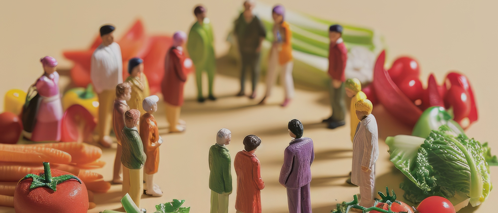

HOME > 지속가능경영 > 윤리경영
윤리경영
CJ푸드빌의 모든 임직원들은 일상적인 업무 수행과정에서
이를 준수하여 윤리경영을 실천할 수 있도록 노력하고 있습니다.
CEO 메세지
CJ푸드빌은 '건강하고 즐거운 식문화를 만드는 GLOBAL F&B Company' 라는 비전을 바탕으로
'ONLYONE적인 맛과 서비스로 일상의 즐거움을 창조한다'는 미션을 실현하기 위해 노력하고 있습니다.

CJ人의 약속
CJ人의 약속은 CJ경영철학을 바탕으로 하며, 이를 구체적으로 실천하기 위한 지침입니다.
이것은 CJ푸드빌과 이해 관계를 맺고 있는 고객, 주주, 동료, 동반자(경쟁사 및 협력사), 국가나 지역사회와의 관계에서
CJ푸드빌 임직원들이 어떻게 행동하는 것이 윤리적이고 합법적인지를 명확히 제시합니다.
CJ人의 약속은 이해관계자와의 관계에서 관련 법규가 정하고 있는 수준보다 더 높은 기준을 따를 것을 요구하고 있으며, 이를 통해 훌륭한 인재를 육성하며 ONLYONE 제품과 서비스를 제공하고, 상호 존중하며 상생하는 산업 생태계를 조성하여 CJ푸드빌의 미션과 비전을 달성해 나갈 것입니다.
고객에 대한 우리의 약속
- 우리는 고객에게 OnlyOne 제품과 서비스를 제공합니다.
- 우리는 고객에게 제품과 서비스를 윤리적이고 정직하게 홍보하고 판매합니다.
- 우리는 고객의 의견을 경청하고 고객 만족을 최우선으로 합니다.
- 우리는 고객의 개인정보를 안전하게 보호합니다.
주주와 투자자에 대한 우리의 약속
- 우리는 회사의 모든 기록을 정확하게 작성하고 철저하게 관리합니다.
- 우리는 공시 원칙을 준수하고 내부자 정보를 엄격하게 관리합니다.
- 우리는 회사의 자산을 소중하게 보호하고 적법하게 사용합니다.
- 우리는 회사의 비밀정보에 관한 정책을 준수하고 이를 보호합니다.
CJ동료에 대한 우리의 약속
- 우리는 프라이드를 갖고 즐겁게 일하는 환경을 만들어 나갑니다.
- 우리는 건강하고 안전한 근로 환경을 조성합니다.
- 우리는 정직하고 적법한 방법으로 최선을 다해 업무를 수행합니다.
- 우리는 동료에 대한 존중과 사생활 보호 사이에서 적절한 균형을 추구합니다.
동반자에 대한 우리의 약속
- 우리는 정정당당하게 경쟁하며 건전한 거래 질서를 확립해 나갑니다.
- 우리는 협력사와 공정하게 거래하여 상생의 산업 생태계를 조성합니다.
글로벌 공동체에 대한 우리의 약속
- 우리는 공유가치를 창출하고 기업의 사회적 책임을 다합니다.
- 우리는 인권을 존중하고 환경을 보호하여 사회적 가치를 실현합니다.
- 우리는 전 세계의 반부패 및 뇌물 방지 법규를 준수합니다.
- 우리는 국제 거래 질서를 존중하고 각국의 관련 법규를 준수합니다.
윤리경영 정책
윤리경영 활동
-
2025
02
-
2024
09
08
07
04
02
정책 및 규범 리스트
-
- CJ글로벌 부패방지 정책
- 글로벌 고객과 시장을 대상으로 부패방지를 위한
가이드를 마련하여 이를 준수하고자 합니다.
-
- CJ글로벌 개인정보 보호 정책
- 개인정보보호 관리의 중요성을 인지/이해하고
개인정보보호를 위한 보안 조치를 실천하고 있습니다.
-
- CJ글로벌 공급망 윤리 정책
- 비즈니스 파트너와 상생을 도모하고, 공급망 관련
법적·윤리적 리스크를 예방하고자 합니다.
-
- 청탁금지법 컴플라이언스 가이드
- 청탁금지법을 기반으로 수립된 세부
가이드라인에 따라 업무를 수행합니다.
-
- CJ글로벌 공정경쟁 정책
- 사업을 수행하고 있는 모든 국가의 반독점 및
경쟁법을 준수하기 위해 노력하고 있습니다.
-
- CJ글로벌 경제제재 컴플라이언스 정책
- 글로벌 마켓에서의 경제제재 준수를 위하여
노력하고 있습니다.
-
- 공정거래 모범 가이드라인
- 공정하고 자유롭게 경쟁하며, 함께 성장할 수 있는
룰과 시스템을 만들어 나갑니다.
-
- 협력사 행동규범